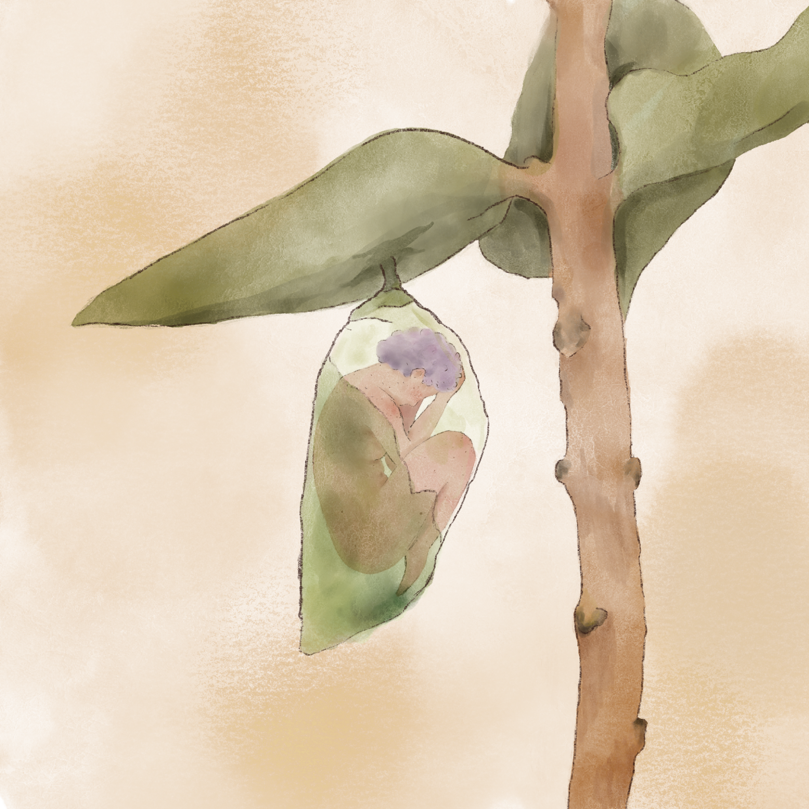
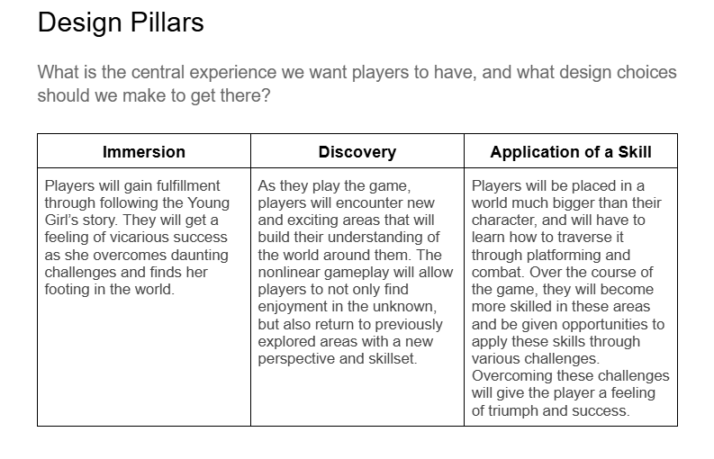
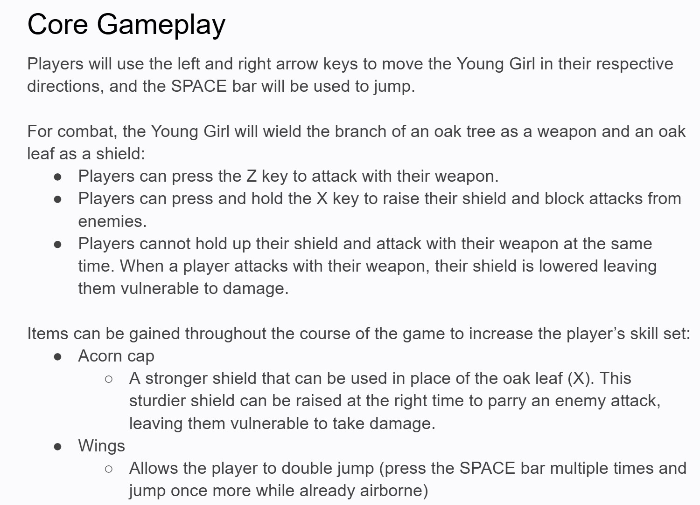

Project Overview
Monarch is a 2D metroidvania where the player guides the Young Girl through a world much bigger than herself. Explore through platforming and combat, and gain more control over your abilities and surroundings as you play. The game pairs the ability-based progression of classic metroidvanias like Hollow Knight with the deeper storytelling of Journey and Gris.
- My roles: Game Designer, Systems Designer, Writer, Artist
- Timeline: 3 weeks

The Design
A look at the design, world-building, and systems behind Monarch.
Game Design
The game design document I wrote for Monarch details a complete concept for the 2D Metroidvania game. It includes the design pillars, core gameplay, character design and more. The document establishes a clear direction for the game before the start of development.

Game Writing
A large part of the game design document is dedicated to establishing the world of Monarch. It details the tone, aesthetics, and story that the player will be immersed in when playing the game.
Systems Design
The document details core mechanics of the game as well as steps for balancing and pacing throughout development.
